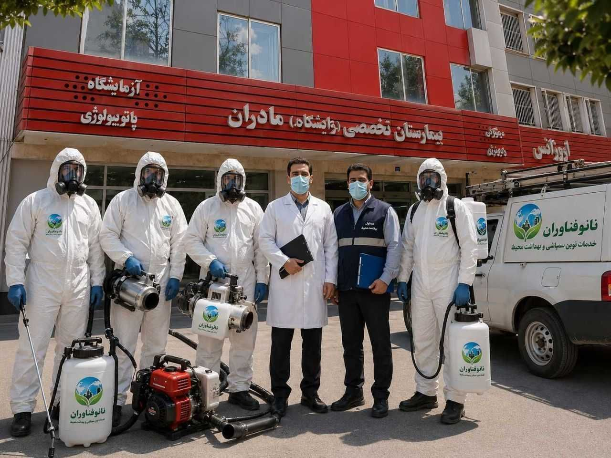
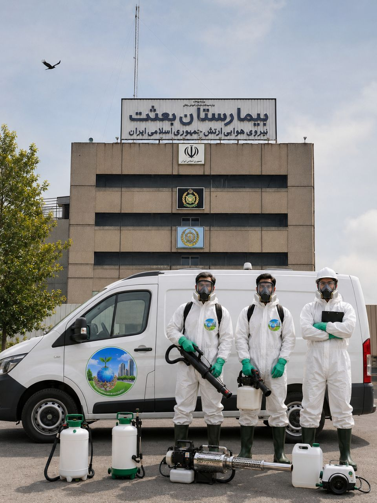
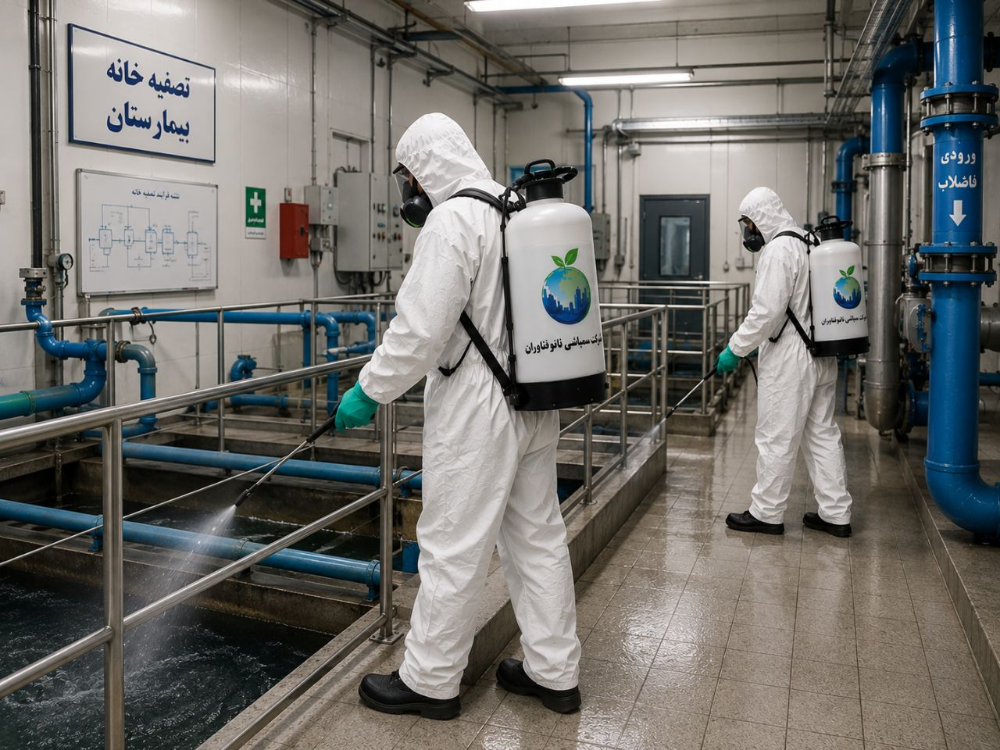
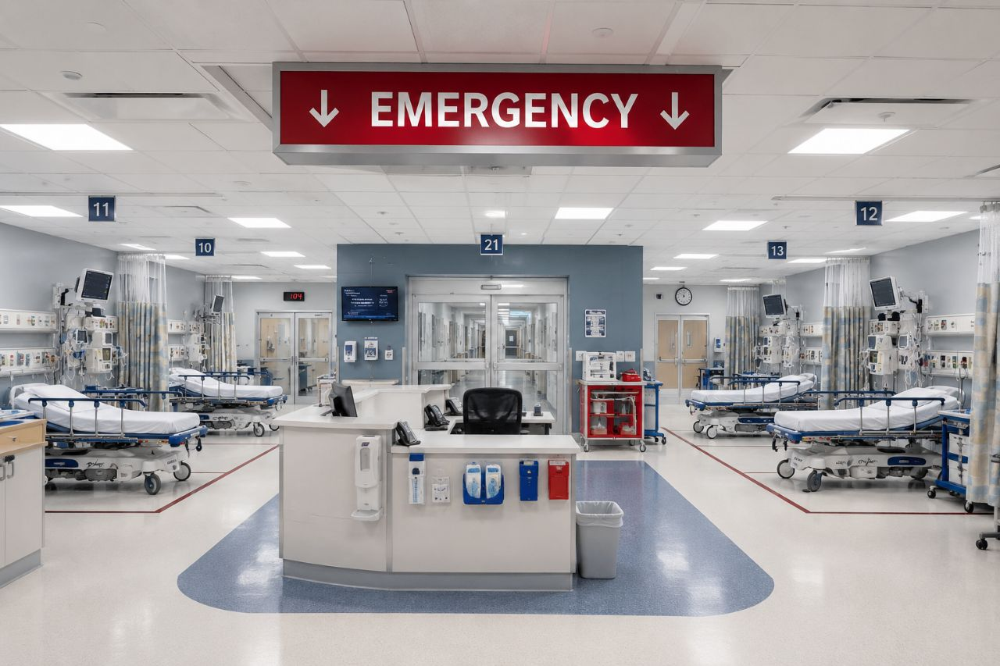
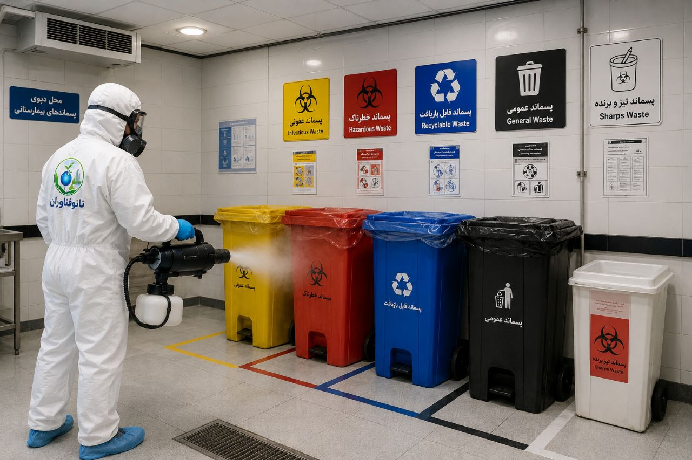

راهنمای جامع و تخصصی سمپاشی بیمارستانها، کلینیکها و مراکز درمانی | تضمین بهداشت و ایمنی در محیطهای درمانی

مقدمه: محیطهای درمانی، خط مقدم بهداشت و ایمنی
بیمارستانها، کلینیکها و مراکز درمانی، قلب تپنده نظام سلامت هر جامعهای هستند. این مکانها روزانه پذیرای هزاران بیمار، مراجعهکننده و کادر درمانی هستند که بسیاری از آنها دارای سیستم ایمنی ضعیف و آسیبپذیر میباشند. در چنین محیطهایی، کنترل آفات نهتنها یک الزام بهداشتی، بلکه یک ضرورت حیاتی برای حفظ سلامت بیماران و اعتبار مراکز درمانی محسوب میشوند.
وجود هرگونه آفت در محیط بیمارستان میتواند عواقب جبرانناپذیری داشته باشد. از انتقال بیماریهای ثانویه و عفونتهای بیمارستانی گرفته تا آسیب به اعتبار مرکز درمانی و حتی تعطیلی برخی بخشها توسط ناظران بهداشت. بر اساس اعلام معاونت بهداشت دانشگاه علوم پزشکی تهران، کنترل آفات در مراکز درمانی یکی از اولویتهای اصلی نظام سلامت کشور است و شیوهنامههای عملیاتی مشخصی برای آن تدوین شده است.
در این مقاله جامع از شرکت سمپاشی نانوفناوران بهداشت تهران، به بررسی کامل چالشهای کنترل آفات در محیطهای درمانی، مهمترین آفات، استانداردهای بهداشتی و روشهای تخصصی سمپاشی بیمارستانها میپردازیم.
بخش اول: چرا سمپاشی بیمارستانها و مراکز درمانی حیاتی است؟
۱. حساسیت بالای بیماران
بیمارستانها محیطی هستند که افراد با سیستم ایمنی ضعیف، بیماران مزمن، کودکان، سالمندان و زنان باردار در آن تردد دارند. وجود آفات در این محیطها میتواند باعث انتقال عفونتهای بیمارستانی، تشدید بیماریها و حتی مرگ و میر شود.
۲. الزامات قانونی و استانداردهای بهداشتی
مراکز درمانی موظف به رعایت استانداردهای سختگیرانه بهداشتی هستند. سازمانهای نظارتی مانند وزارت بهداشت، درمان و آموزش پزشکی به طور دورهای از بیمارستانها بازرسی میکنند و در صورت مشاهده هرگونه آلودگی، ممکن است مرکز درمانی را جریمه یا حتی تعطیل کنند.
۳. تأثیر بر اعتبار مرکز درمانی
وجود آفات در بیمارستان، نهتنها سلامت بیماران را به خطر میاندازد، بلکه اعتبار و شهرت مرکز درمانی را نیز تحت تأثیر قرار میدهد. یک بیمارستان آلوده، به عنوان مرکزی با استانداردهای پایین شناخته میشود و ممکن است بیماران را از دست بدهد.
۴. پیشگیری از عفونتهای بیمارستانی
کنترل آفات نقش مهمی در کاهش عفونتهای بیمارستانی ایفا میکند. بر اساس تحقیقات، آلودگی موجود در محیط بیمارستان نقش مهمی در ایجاد عفونتهای بیمارستانی مرتبط ایفا میکند که در این بین کنترل آفتهای بیولوژیک از اهمیت و درجه بالایی در اماکن بیمارستانی برخوردار میباشد.
۵. حفظ تجهیزات و زیرساختها
جوندگان با جویدن سیمهای برق، کابلها و تجهیزات پزشکی، میتوانند خسارتهای مالی سنگینی به بیمارستانها وارد کنند و حتی باعث اختلال در خدمات درمانی شوند.

بخش دوم: مهمترین آفات در بیمارستانها و مراکز درمانی
۱. سوسکها (آلمانی و آمریکایی)
سوسکها یکی از رایجترین و خطرناکترین آفات در محیطهای درمانی هستند. آنها ناقل باکتریهای بیماریزا مانند سالمونلا، ایکولی و استافیلوکوک هستند و میتوانند عفونتهای بیمارستانی را منتقل کنند.
سوسک آلمانی: کوچکترین و مقاومترین سوسک که در محیطهای گرم و مرطوب مانند آشپزخانهها، آبدارخانهها و اتاقهای استراحت پرسنل زندگی میکند. این سوسک به سرعت تکثیر میشود و در صورت عدم کنترل به موقع، کل بیمارستان را آلوده میکند.
سوسک آمریکایی: بزرگترین سوسک که از طریق لولههای فاضلاب و منهولها وارد بیمارستان میشود. این سوسک معمولاً در زیرزمینها، تاسیسات، حمامها و توالتها یافت میشود.
۲. ساس تختخواب
ساسها یکی از بدترین کابوسهای بخشهای بستری بیمارستانها هستند. گزش ساس باعث خارش شدید، قرمزی، واکنشهای آلرژیک و در موارد نادر، انتقال بیماریها میشود. ساسها به راحتی از طریق وسایل بیماران، لباسها و تجهیزات پزشکی وارد بخشهای بستری میشوند.
۳. موشها و جوندگان
موشها در بیمارستانها، علاوه بر انتشار بیماریهایی مانند هانتاویروس و سالمونلا، میتوانند تجهیزات پزشکی و کابلهای برق را تخریب کنند. جوندگان در زیرزمینها، انبارها، آشپزخانهها و سایر نقاط گرم و مرطوب بیمارستان لانهسازی میکنند.
۴. مگسها و پشهها
حشرات پرنده مانند مگس و پشه، ناقل بسیاری از ویروسها و باکتریها هستند. آنها به ویژه در نزدیکی انبارهای زباله، بخشهای تغذیه و محیطهای مرطوب بیمارستان، مشکلات جدی ایجاد میکنند.
۵. مورچهها
مورچهها به دلیل جستجوی غذا و رطوبت، به راحتی وارد بخشهای مختلف بیمارستان از جمله اتاقهای بستری، آزمایشگاهها و آشپزخانهها میشوند. هرچند خطر مستقیمی ندارند، اما نشاندهنده عدم رعایت بهداشت هستند.
۶. کنهها و مایتها
کنهها و مایتها میتوانند باعث حساسیتهای پوستی، خارش و در موارد نادر، انتقال بیماریها شوند. آنها معمولاً در فرشها، مبلمان و مکانهای گرد و غبار زندگی میکنند.
بخش سوم: چالشهای خاص سمپاشی بیمارستانها

۱. حساسیت بیماران و پرسنل
بیمارستانها محیطی هستند که افراد با شرایط حساس در آن حضور دارند. استفاده از سموم باید با نهایت دقت و با رعایت استانداردهای سختگیرانه انجام شود. سموم باید کاملاً تأییدشده، بدون بو و فاقد هرگونه خطر برای بیماران و پرسنل باشند.
۲. عدم تعطیلی کامل بیمارستان
برخلاف بسیاری از محیطها، بیمارستانها نمیتوانند برای سمپاشی تعطیل شوند. بنابراین، سمپاشی باید به صورت مرحلهای و در زمانهای کمترافیک انجام شود و بخشهای سمپاشیشده کاملاً ایزوله گردند.
۳. تنوع بالای فضاها
بیمارستانها دارای فضاهای متنوعی مانند اتاقهای بستری، اتاق عمل، بخشهای آیسییو، آزمایشگاهها، آشپزخانه، رختشورخانه، انبار دارو، تاسیسات و فضاهای عمومی هستند که هر کدام نیاز به روشهای کنترل خاص خود دارند.
۴. دسترسی به نقاط صعبالوصول
در بیمارستانها، پشت تجهیزات سنگین پزشکی، کابینتهای دارویی، تختهای بیمارستانی و تجهیزات الکترونیکی، نقاطی هستند که معمولاً به سختی قابل دسترس هستند و میتوانند محل مناسبی برای زندگی و تکثیر آفات باشند.
۵. استفاده از سموم بیخطر و بدون بو
در بیمارستانها، سموم باید کاملاً بیبو باشند تا بر تنفس بیماران و پرسنل تأثیر نگذارند. همچنین سموم باید فاقد هرگونه مواد مضر برای انسان باشند و امکان ایجاد لکه روی تجهیزات پزشکی را نداشته باشند.
۶. برنامهریزی زمانی دقیق
سمپاشی بیمارستانها باید در زمانهایی انجام شود که کمترین تردد در بخشهای هدف وجود داشته باشد. در صورت لزوم، انتقال موقت بیماران از اتاقهای موردنظر باید انجام شود تا هیچ تماس مستقیمی بین افراد و مواد شیمیایی ایجاد نشود.
بخش چهارم: روشهای تخصصی سمپاشی بیمارستانها
مرحله ۱: بازدید و ارزیابی اولیه
کارشناسان ما با بررسی کامل بیمارستان، نقاط حساس، نوع آفات، میزان آلودگی و مسیرهای ورود را شناسایی میکنند. این بازرسی شامل موارد زیر است:
- اتاقهای بستری: بررسی تختها، ملحفهها، تشکها، پشت کابینتها و نقاط تاریک
- اتاق عمل و بخشهای حساس: بررسی دقیق تجهیزات، کابینتها و فضاهای استریل
- آشپزخانه و رختشورخانه: بررسی انبارها، کابینتها، نقاط مرطوب و مجاری فاضلاب
- انبار دارو و تجهیزات پزشکی: بررسی بستهبندیها، قفسهها و نقاط ورود
- فضاهای عمومی: لابی، راهروها، سرویسهای بهداشتی، سالنهای انتظار
- فضاهای پشتی: موتورخانه، زیرزمین، انبارها، اتاقهای استراحت پرسنل

مرحله ۲: برنامهریزی و هماهنگی
بر اساس نتایج بازرسی، یک برنامه جامع برای سمپاشی بیمارستان تدوین میشود که شامل:
- زمانبندی دقیق: سمپاشی در زمانهای کمترافیک (معمولاً پس از ساعات ملاقات یا در تعطیلات)
- اطلاعرسانی به پرسنل: اطلاعرسانی شفاف در مورد عملیات سمپاشی
- هماهنگی با بخشهای مختلف: هماهنگی کامل با مدیریت بیمارستان و بخشهای مختلف
- ایزولهسازی بخشهای هدف: بخشهای سمپاشیشده باید کاملاً از دسترس خارج شوند

مرحله ۳: انتخاب روش و سموم مناسب
در بیمارستانها، انتخاب سموم و روشهای سمپاشی با نهایت دقت انجام میشود:
- در بخشهای درمانی و اتاق عمل: استفاده از سموم پیرتروئیدی با سمیت بسیار پایین برای انسان و بوی کم (سایپرمترین، آلفاسایپرمترین، پرمترین) با دوز ۱۰ سیسی در لیتر
- در اتاق عمل: استفاده از سموم پیرتروئیدی با نیمهعمر پایین مانند آلفامترین
- در بخشهای غیردرمانی (تاسیسات، زیرزمین، انبارها): امکان استفاده از سموم دلتامترین یا ترکیبات سایپرمترین و کلروپیریفوس
- برای سوسکهای آلمانی مقاوم: استفاده از طعمههای سوسک حاوی ترکیبات نیکوتینی یا فرمونی که سمیت بسیار پایینی دارند و چندین هزار بار موثرتر از سموم معمولی هستند
- برای کنترل جوندگان: استفاده از سموم تاخیری (برودیفاکوم، برومادیالون، دیفتیالون) که برای انسان بیخطرتر هستند و استفاده از سموم سریعالاثر در بیمارستان اکیداً ممنوع است
مرحله ۴: ایزولهسازی و اجرای سمپاشی
قبل از شروع سمپاشی، تمام مواد غذایی، داروها، تجهیزات حساس و وسایل پزشکی باید پوشانده شوند یا از محیط خارج گردند. همچنین بیماران آسیبپذیر، کودکان، زنان باردار و افراد با سیستم ایمنی ضعیف باید از محیط سمپاشی دور شوند. عملیات سمپاشی با استفاده از تجهیزات پیشرفته و سموم استاندارد انجام میشود.
مرحله ۵: تهویه و ایمنسازی
پس از سمپاشی، محیط به مدت مناسب تهویه میشود و کارشناسان زمان بازگشت ایمن بیماران و پرسنل را اعلام میکنند.
مرحله ۶: بازدید مجدد و پایش
پس از اتمام عملیات، کارشناسان ما بازدید مجدد انجام میدهند تا از موفقیت سمپاشی اطمینان حاصل کنند و در صورت نیاز، اقدامات تکمیلی انجام دهند.
بخش پنجم: اقدامات پیشگیرانه در بیمارستانها
۱. کنترل نقاط ورود
- بستن تمام شکافها و درزهای دیوارها، کف و سقف
- نصب توری روی پنجرهها و دریچههای تهویه
- نصب درپوشهای مناسب روی دربها
- تعمیر فوری شیشههای شکسته و دربهای خراب

۲. مدیریت بهداشت محیط
- رنگآمیزی تمام دیوارها و تختها به رنگ سفید و روشن برای تشخیص سریع آلودگی
- استفاده از سطلهای زباله فلزی دربدار و ضدعفونی منظم آنها
- شستشوی مرتب ملحفهها، بالشتها، تشکها و پتوها
- حفظ بهداشت سرویسهای بهداشتی و ضدعفونی مکرر آنها
- خودداری از قرار دادن گلدانهای دارای خاک تازه در محوطه بیمارستان
۳. مدیریت مواد غذایی و دارو
- عدم رها کردن هرگونه مواد غذایی در محوطه بیمارستان
- نگهداری داروها و مواد غذایی در ظروف دربدار و مقاوم
- دفع صحیح زبالههای عفونی و مواد غذایی
۴. آموزش پرسنل
پرسنل بیمارستان باید علائم حضور آفات را بشناسند، روشهای گزارشدهی سریع را بدانند و نکات بهداشتی را رعایت کنند. همچنین پرسنل باید قبل و بعد از سمپاشی آموزشهای لازم را دریافت کنند تا از ورود به فضاهای سمپاشیشده خودداری نمایند.
۵. پایش مستمر
- استقرار نظام گزارشدهی مناسب از پرسنل بیمارستان
- استفاده از تلههای چسبنده در نقاط استراتژیک
- بازرسی دورهای توسط کارشناسان
- تهویه مناسب هوا در تمام نقاط بیمارستان
بخش ششم: نکات قبل و بعد از سمپاشی بیمارستان
اقدامات قبل از سمپاشی
- تماس با کارشناسان حرفهای سمپاشی و مشاوره رایگان
- خارج کردن بیماران کلیوی، قلبی، ریوی و افراد دارای حساسیت از محیط سمپاشی
- دور کردن کودکان، زنان باردار و افراد مسن از محوطه سمپاشی
- جمعآوری تمام داروها و مواد غذایی از آشپزخانهها و انبارها
- پوشاندن تمام صندلیها، تختها و تجهیزات با پارچههای محافظ
- اطلاعرسانی به تمام پرسنل در مورد تاریخ و زمان سمپاشی
اقدامات بعد از سمپاشی
- تهویه کامل محیط
- تمیز کردن و ضدعفونی کامل محیط برای جلوگیری از ورود مجدد آفات
- خودداری از ورود وسایل کهنه و اقساطی به انبارها و پارکینگ
- در صورت مشاهده مجدد حشرات، اطلاعرسانی فوری به کارشناسان
- انجام سمپاشیهای دورهای در صورت نیاز
بخش هفتم: هزینه سمپاشی بیمارستان و کلینیک
هزینه سمپاشی بیمارستان به عوامل زیر بستگی دارد. برای دریافت مشاوره رایگان و استعلام دقیق هزینه، با کارشناسان ما تماس بگیرید:
| عامل | تأثیر بر هزینه |
|---|---|
| مساحت بیمارستان | هرچه متراژ بزرگتر باشد، هزینه بیشتر است |
| تعداد بخشها و طبقات | بخشهای بیشتر نیاز به عملیات گستردهتری دارند |
| شدت آلودگی | آلودگی شدید نیاز به عملیات بیشتر و زمانبرتری دارد |
| نوع آفات | ساس و سوسک آلمانی نیاز به روشهای خاص و هزینه بیشتری دارند |
| نوع روش سمپاشی | طعمهگذاری، مهپاشی، تزریق یا ترکیبی |
| نوع سموم | سموم تخصصی و بیخطر هزینه بیشتری دارند |
| موقعیت جغرافیایی | بیمارستانهای دورافتاده هزینه ایاب و ذهاب بیشتری دارند |
توجه: هزینه سمپاشی بیمارستانها معمولاً بر اساس متراژ محاسبه میشود و با توجه به مساحت بالای ۲۵۰ متر، هزینهها به صورت تخصصی برآورد میگردد.
بخش هشتم: سوالات متداول درباره سمپاشی بیمارستان
چند بار در سال باید بیمارستان سمپاشی شود؟
توصیه میشود بیمارستانها حداقل سالی دو تا چهار بار (هر فصل یا هر شش ماه) سمپاشی شوند. با این حال، زمان مناسب برای سمپاشی با توجه به نوع آفات و شدت آلودگی تعیین میشود. برای سوسکهای آمریکایی، سمپاشی در نیمه اول اردیبهشت ماه و یک ماه بعد (برای از بین بردن تخمهای باقیمانده) توصیه میشود. برای سوسکهای آلمانی، به محض مشاهده حتی یک مورد، باید اقدام لازم صورت گیرد.
آیا سمپاشی بیمارستان برای بیماران و پرسنل خطرناک است؟
خیر، سموم استفادهشده توسط شرکت نانوفناوران با رعایت کامل استانداردهای بهداشتی انتخاب میشوند و برای انسان بیخطر هستند. در هنگام سمپاشی، بخشهای هدف ایزوله میشوند و بیماران آسیبپذیر از محیط خارج میگردند. پس از تهویه کامل، محیط برای حضور افراد ایمن میشود.
چه مدت بعد از سمپاشی بیمارستان برای حضور بیماران ایمن است؟
بسته به نوع سموم استفادهشده، معمولاً ۲ تا ۴ ساعت پس از سمپاشی، محیط برای حضور افراد ایمن است. کارشناسان ما زمان دقیق را به شما اعلام میکنند.
آیا سمپاشی اتاق عمل و بخشهای حساس بیمارستان امکانپذیر است؟
بله، سمپاشی اتاق عمل و بخشهای حساس با استفاده از سموم پیرتروئیدی با نیمهعمر پایین و سمیت بسیار کم انجام میشود. این سموم برای بیماران و پرسنل کاملاً ایمن هستند و پس از تهویه کامل، محیط برای استفاده مجدد آماده میشود.
بهترین روش کنترل موش در بیمارستان چیست؟
بهترین روش کنترل موش در بیمارستان، استفاده از طعمههای مسموم با اثر تاخیری (برودیفاکوم، برومادیالون، دیفتیالون) است. استفاده از سموم سریعالاثر در بیمارستان اکیداً ممنوع است. همچنین بهسازی محیط و بستن نقاط ورود، نقش کلیدی در کنترل جوندگان دارد.
آیا سمپاشی بیمارستان در زمان حضور بیماران امکانپذیر است؟
سمپاشی بیمارستان معمولاً در زمانهای کمترافیک (پس از ساعات ملاقات یا در تعطیلات) انجام میشود. در صورت لزوم، بیماران از بخشهای هدف به بخشهای دیگر منتقل میشوند و بخشهای سمپاشیشده کاملاً ایزوله میگردند.
نتیجهگیری
کنترل آفات در بیمارستانها، کلینیکها و مراکز درمانی نهتنها یک الزام بهداشتی، بلکه یک ضرورت حیاتی برای حفظ سلامت بیماران و اعتبار مراکز درمانی است. وجود آفات در این محیطهای حساس میتواند باعث شیوع عفونتهای بیمارستانی، تهدید جان بیماران و آسیب به شهرت مرکز درمانی شود.
شرکت سمپاشی نانوفناوران بهداشت تهران با بیش از یک دهه تجربه در زمینه سمپاشی بیمارستانها، کلینیکها و مراکز درمانی، آماده ارائه خدمات تخصصی و تضمینی به شماست. تیم کارشناسان ما با شناسایی دقیق نوع آفات، استفاده از سموم استاندارد و ایمن، و رعایت کامل نکات ایمنی، محیطی امن، بهداشتی و عاری از آفات را برای مرکز درمانی شما به ارمغان میآورند.
🚀 همین حالا اقدام کنید:
📞 تماس فوری: ۰۹۱۲۰۷۰۵۷۴۶
💬 درخواست مشاوره رایگان: از طریق واتساپ یا ایتا
🔗 مشاهده سایر خدمات: کنترل آفات مسکونی